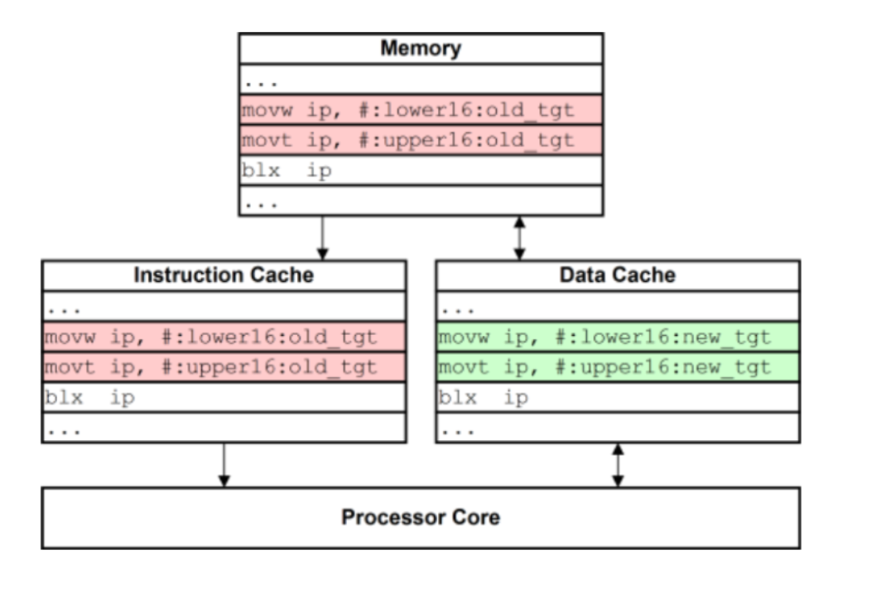

During this stage, the cpu writes the result of an instruction back to memory or device.
CPU usually uses Instruction Cache and Data Cache to store instruction. When a cpu needs to execute an instruction, first, instruction cache would examine whether it is already involved in an instruction cache. If yes, cpu can directly read the instruction from the cache instead of from the main store, which increases the speed of reading instructions greatly. If not, cpu would read the instruction from the main store, as well as store it in the main store. Cache helps accelerate the instruction processing, and improve access efficiency.
Difference between Instruction Cache and Data Cache:
| Instruction Cache | Only provide read operation |
|---|---|
| Data Cache | Capable of performing both read and write operations |
